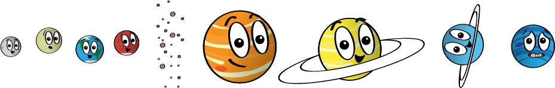
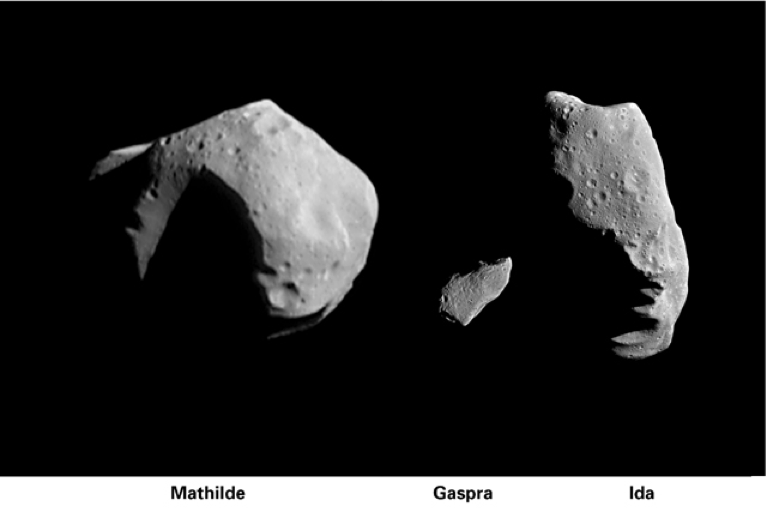
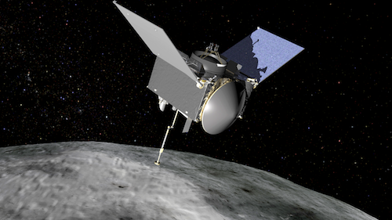

Asteroides
¿Que son los Asteroides?
RESPUESTA CORTA:
Los asteroides son pequeños objetos rocosos que orbitan alrededor del Sol.
Aunque los asteroides den vueltas alrededor del Sol como los planetas, son mucho más pequeños.
Los asteroides son pequeños objetos rocosos que orbitan alrededor del Sol.
Aunque los asteroides den vueltas alrededor del Sol como los planetas, son mucho más pequeños.

Hay muchos asteroides en nuestro sistema solar. La mayoría de ellos viven en el cinturón de asteroides —una región entre las órbitas de Marte y Júpiter—.

La mayoría de los asteroides en nuestro sistema solar se pueden encontrar en el cinturón de asteroides, entre Marte y Júpiter.
Pero los asteroides también se encuentran en otros lugares. Por ejemplo, algunos están en la misma órbita de los planetas. Esto significa que el asteroide
y el planeta siguen el mismo camino alrededor del Sol. La Tierra y algunos otros planetas tienen asteroides como este.
¿De dónde vienen los asteroides?
Los asteroides son los restos de la formación de nuestro sistema solar. Nuestro sistema solar apareció hace unos 4600 millones de años, con el derrumbe de una
gran nube de gas y polvo. Cuando esto sucedió, la mayor parte del material cayó al centro de la nube y formó el Sol.
Parte del polvo en condensación dentro de la nube
se convirtió en los planetas. Los objetos del cinturón de asteroides nunca tuvieron la oportunidad de incorporarse a los planetas, y son restos de ese tiempo lejano en el que se formaron los planetas.
¿Son todos los asteroides iguales?
¡De ninguna manera! Debido a que los asteroides se forman en diferentes lugares y a diferentes distancias del Sol, no hay dos asteroides iguales. Estas son algunas de sus diferencias:
- Los asteroides no son redondos como planetas. Tienen formas dentadas e irregulares.
- Algunos asteroides tienen cientos de kilómetros de diámetro, pero la mayoría son tan pequeños como los guijarros
- La mayoría están hechos de diferentes tipos de roca, pero algunos contienen arcilla o metal, como el níquel y el hierro

Mathilde, Gaspra e Ida son tres de los asteroides que una nave espacial de la NASA ha podido captar en una imagen.
Aquí, se puede ver que los asteroides tienen una gran variedad de formas y tamaños. Fuente: NASA/JPL
¿Qué podemos aprender de los asteroides?
Dado que los asteroides se forman al mismo tiempo que otros objetos en nuestro sistema solar, estas rocas espaciales pueden dar a los científicos mucha información sobre la historia de los planetas y el Sol. Los científicos pueden aprender muchas cosas sobre los asteroides mediante el estudio de meteoritos: pequeños fragmentos de asteroide que han cruzado nuestra atmósfera y aterrizaron en la superficie de la Tierra.
Varias misiones espaciales de la NASA también han volado y observado asteroides. La nave espacial NEAR Shoemaker aterrizó en Eros, un asteroide cerca de la Tierra, en 2001. Luego, la nave espacial Dawn viajó al cinturón de asteroides en 2011. Orbitó y estudió el asteroide gigante Vesta y el planeta enano Ceres.
En 2016, la NASA lanzó la nave espacial OSIRIS-REx para estudiar un asteroide cerca de la Tierra llamado Bennu. Después de estudiar a Bennu durante unos años, OSIRIS-REx recogió una muestra de polvo y rocas de la superficie del asteroide.
¡Ahora, OSIRIS-REx se dirige de regreso a la Tierra! Su contenedor de muestra aterrizará en el desierto de Utah en septiembre de 2023. Luego, los científicos recolectarán el contenedor y examinarán el polvo y las rocas en busca de pistas sobre cómo se formaron los planetas y comenzó la vida.

artística de la nave OSIRIS-REx en Bennu. Fuente: NASA/Goddard/University of Arizona.